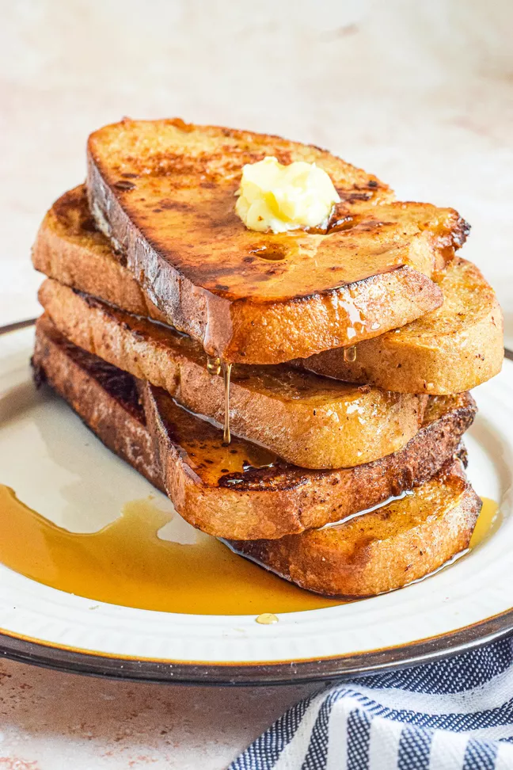

French Toast

Description
There are many, fancy variations on this basic recipe. This easy recipe works with many types of bread - white, whole
wheat, brioche, cinnamon-raisin, Italian, or French. Serve hot with butter or margarine and maple syrup.
Source: allrecipes - French Toast by Jan Bittner
Ingredients
- 3/4 cups Milk
- 2 Eggs, large
- 6 Slices bread, thick
- 1 tbsp Unsalted butter
- Salt, to taste
- 1 tsp Vanilla extract (optional)
- 1/4 tsp Ground cinnamon (optional)
Steps
- Whisk milk, eggs, vanilla, cinnamon, and salt together in a shallow bowl.
- Lightly butter a griddle and heat over medium-high heat.
- Dunk slices of bread in the egg mixture one at a time, soaking both sides.
- Transfer each slice to the hot skillet and cook until golden brown, about 3-4 minutes per side.
- Serve hot with butter and maple syrup!